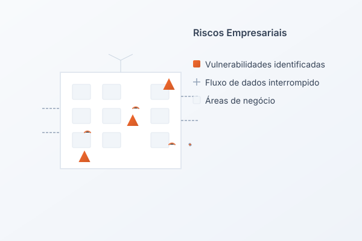

Como identificar riscos ocultos na sua empresa
Mapas de risco, sinais de alerta e onde procurar vulnerabilidades que não aparecem nos relatórios.
Ler maisDiagnóstico preciso, governança sólida e decisões baseadas em dados para proteger valor.
Empresas enfrentam vulnerabilidades que drenam valor e aumentam a exposição a eventos críticos.


Integramos auditoria corporativa, gestão de riscos e inteligência analítica em uma abordagem coesa que transforma dados em vantagem competitiva.
Análise contextualizada do ambiente de controle e maturidade da governança
Riscos classificados por impacto potencial e probabilidade de ocorrência
Implementação de mecanismos de controle alinhados aos objetivos de negócio
Indicadores quantitativos para monitoramento contínuo da eficácia
Soluções integradas para auditoria, governança, compliance e inteligência analítica.
Avaliação independente de processos, controles e conformidade.
Estruturação de processos e melhoria de governança empresarial.
Mapeamento, análise e mitigação de riscos operacionais e estratégicos.
Políticas e processos para garantir conformidade e segurança.
Transformação de dados em insights para decisões de alto impacto.
Processo leve e objetivo para gerar resultados desde o diagnóstico.

Levantamento estruturado do contexto, objetivos estratégicos, estrutura de governança e maturidade dos controles internos.
“A ARPO trouxe clareza sobre nossos riscos e executou melhorias que reduziram perdas operacionais.”
“Além do diagnóstico, implementaram controles e KPIs que elevaram nossa governança a outro nível.”
“Metodologia objetiva e baseada em dados. Decisões mais assertivas desde o primeiro mês.”
Governança que inspira confiança e decisões melhores.
Diagnóstico objetivo, execução prática e indicadores que comprovam resultados.
Análises institucionais sobre auditoria, governança e gestão de riscos.
Mapas de risco, sinais de alerta e onde procurar vulnerabilidades que não aparecem nos relatórios.
Ler mais
Princípios, estruturas e como a governança sustenta decisões estratégicas e crescimento sustentável.
Ler maisDo controle à geração de valor: auditoria como alavanca de eficiência e compliance.
Ler mais
Prioridades, frameworks e inteligência de dados para decisões de alto impacto.
Ler maisNossa equipe pode realizar uma análise inicial e identificar oportunidades de melhoria em governança, controles e processos.